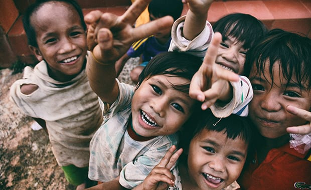

CONTACT US
For more information about how to donate or volunteer, please visit our enquiries page or contact us using the information below.
Contact Information
Phone: 012 456 8954 / 075 465 8965
Email: thembagiversofhope@gmail.com
TikTok: @themba.giversofhope
Instagram: @Thee.giversofhope
PLEASE TAKE NOTE OF THE FOLLOWING INFORMATION
- Themba Givers operates in local communities over the weekend.
- There is an office where members of the community can go when they have enquiries or questions.
- The office can assist when an issue cannot be resolved through the website.
- Members can visit the office if they are having difficulty making a donation or volunteering.
- Volunteers who have not received information about their weekend activities can also make an enquiry.
- Our office address is provided in the footer below.
